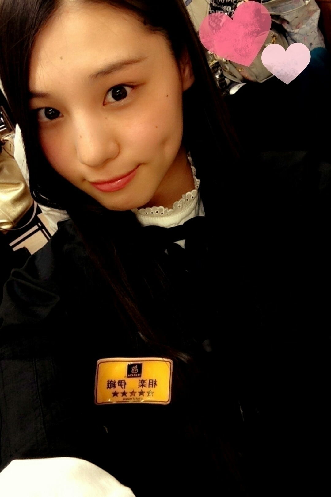
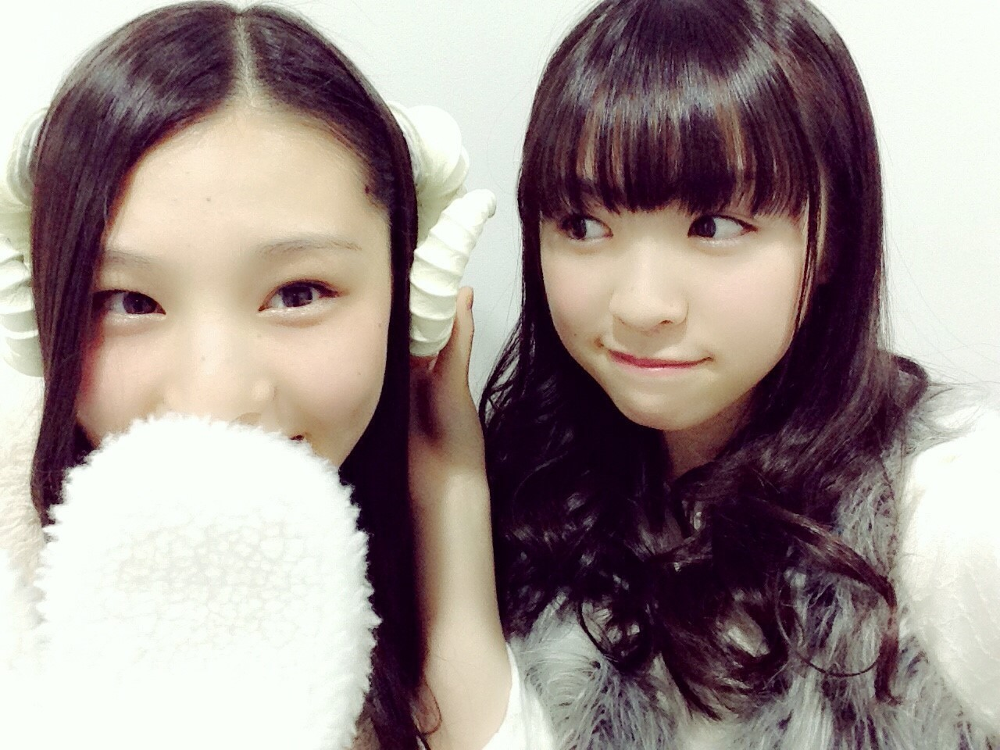
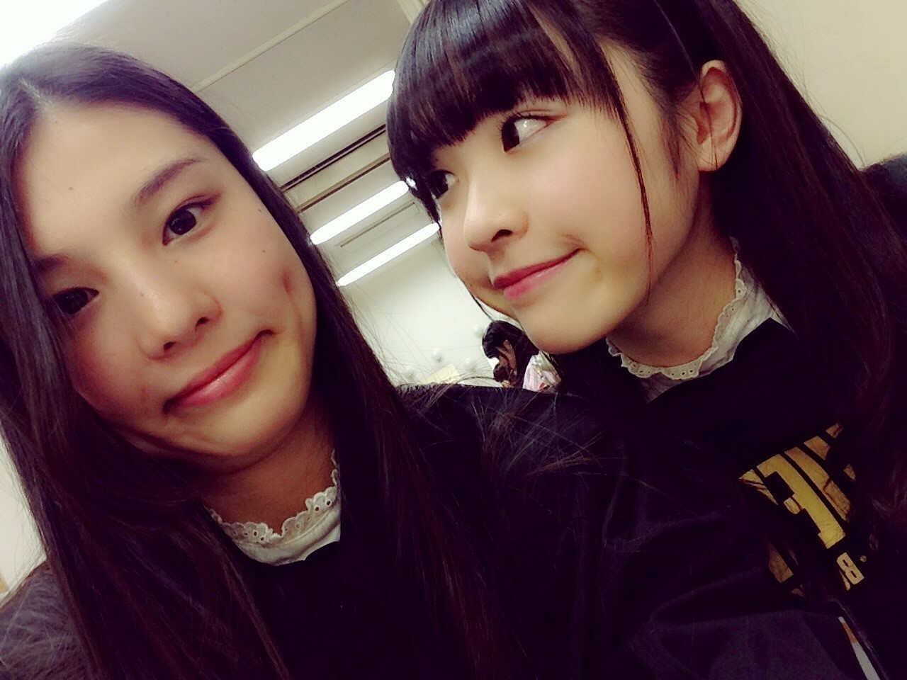
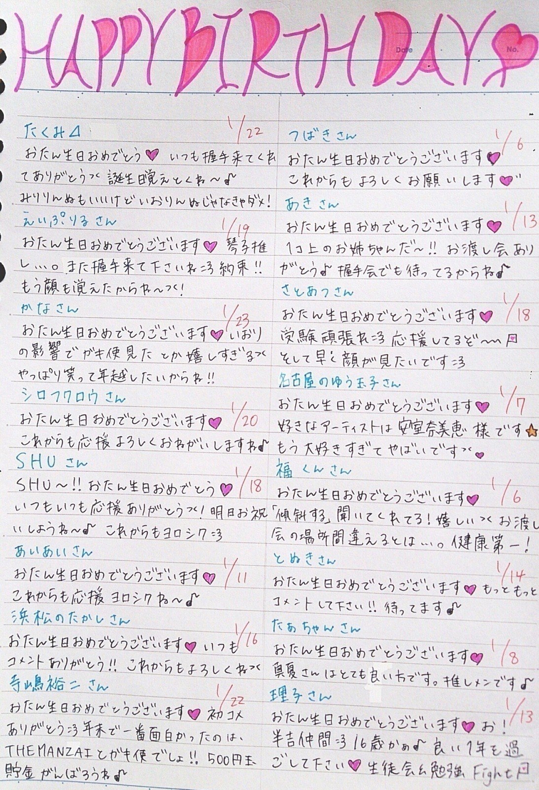
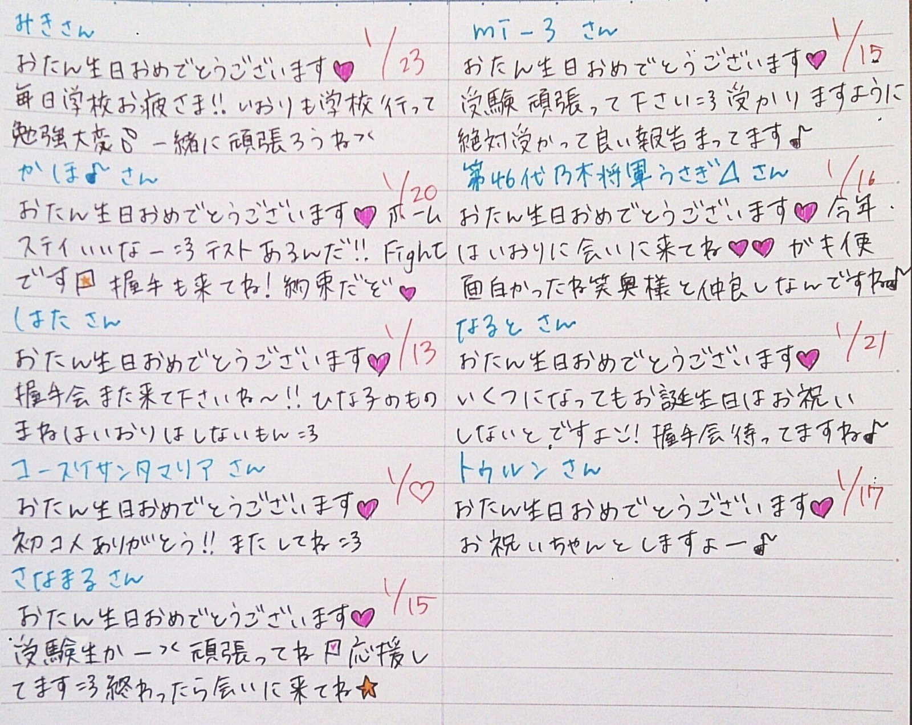
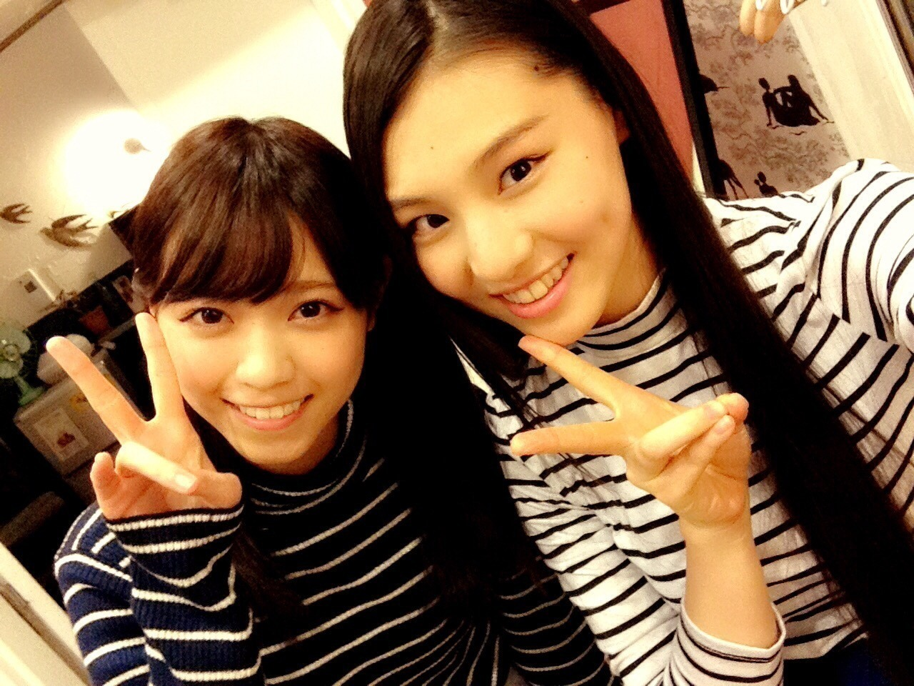
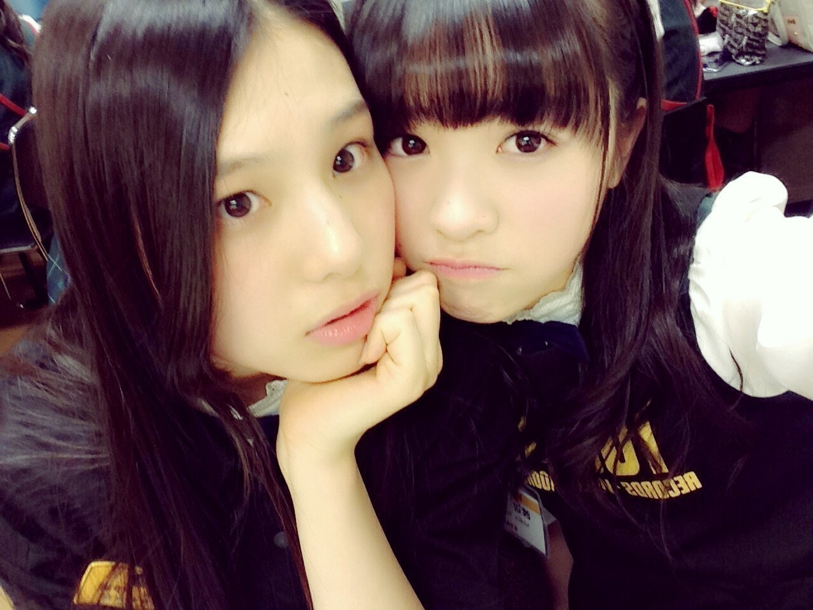

| 2015/01 17 Sat | 相楽伊織 (*いおり_(．．*)vol.22) |
みなさんこんばんはー！
高校2年生17歳
さがらいおりです！

新成人の方
おめでとうございます！！
中学生の頃は
はたちってスゴい大人に見えてたけど
今考えるとそうでもないのかなー
って思います
あと 3 年、、
いおりはもう少し先かな～
それから、センター試験
お疲れ様ですm(_ _)m
お姉ちゃんが受けに行きました！！
明日もあるのかな？
頑張って下さい(>_<)

最近行きたい
お笑いライブが多すぎて
公演探したり
チケット探したり
してるだけで、楽しくなっちゃう♪♪
あ、これやるんだー
とか
え、何この組み合わせ！？
とか
うわー！行きたーーい！
とか
この公演面白かったなー
とか
考えてます♡♡
大阪の劇場に行ってみたい！

みりりんぬなら飛んで行けそう
~いおり庵~
映画は字幕派？吹き替え派？
字幕派！
口の動きと声が一緒じゃないのが
違和感で映画に集中できない！！
男の人の好きな格好は？♡
えーっと、
んーと、
似合ってればなんでも！
女の子もそれぞれ似合う服装があるから、
自分の好きな服を着てくれれば
いおりはそれが好きだよ♡
女のコだけど推してもいいかな？
許可などいりません！
応援よろしく♡
500円玉貯金の目標額は？
う～んどうしようかな～
まだ決めてないけど
いつか、何かを買いたいって思った時に
それを使えたらいいかな♡
いおりってイライラしたときどうしてる？
普段イライラしないけど
お風呂でお笑い見て安室ちゃ、、
安室奈美恵さんの曲聞けば
もう忘れてる♡
ピスタチオ面白くないですか？笑
∞ホール行けば見れるよ～♪♪
お誕生日の方にメッセージ(´,,•ω•,,)


今月のYOU PAPERさんに
取材をしていただいてるので
チェックよろしくお願いします♪♪
それから、
この前西野さんと雑誌の撮影と取材を
していただいたので
発売日近くなったら告知しますね *˙︶˙*)ﾉ"

緊張したけどとっても勉強になりました！！
それから、
のぎ天に相楽伊織も出てますので
時間があったら見てください(>_<)！
あ、そうそう
今日からシャンプー変えるんです
OLEO D'ORの
数量限定のピンクに
なんでOLEO D'ORかというと
安室奈美恵さんが
CMをしてるからです
数量限定の方を買ったら
新発売の時とは違う
ポスターがついてくるからです
いおりのお部屋
安室奈美恵様のポスター
たくさん貼ってあります
ありすぎてはりきれてないです
すごい髪にもいい感じなんです
いおりの髪の毛は
細くて絡まりやすいので
トリートメントも
ちょうどいい重さなんです
まだシャンプー何にしようか
悩んてる方いたらぜひ；）
純奈も使ってるって！
写真はなかった、、(・∀・)

あ！あとね、
この前のブログに載せたパーカー
お揃いにしたー♡
って方がいて
嬉しかったから
握手会で着ようと思って♪♪
いつか着ます！！
あ、あとこれだけ言わせて
いおり最近顔に○○○が増えた気がして(^^;
明日の握手会で
気付いたらすごいけど、！
楽しみに待ってまーす♪♪
なーにきよーかなー
i o r i .